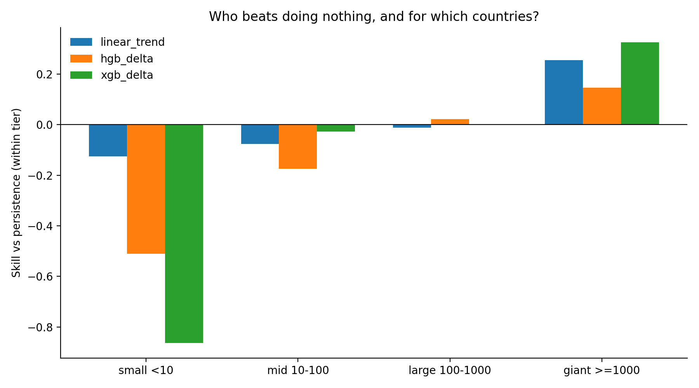
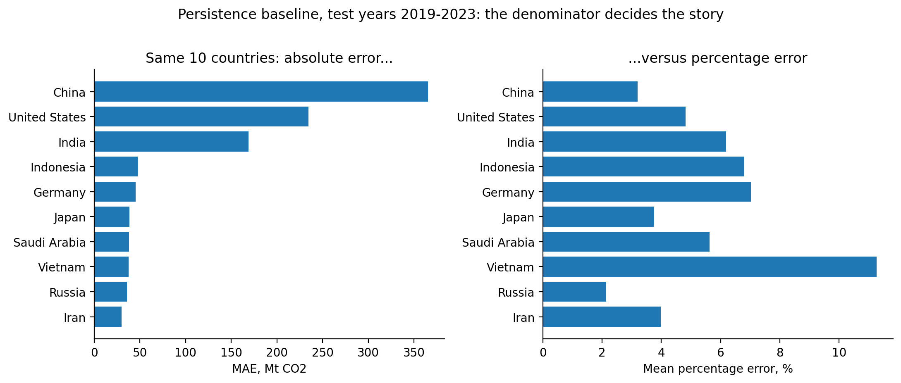
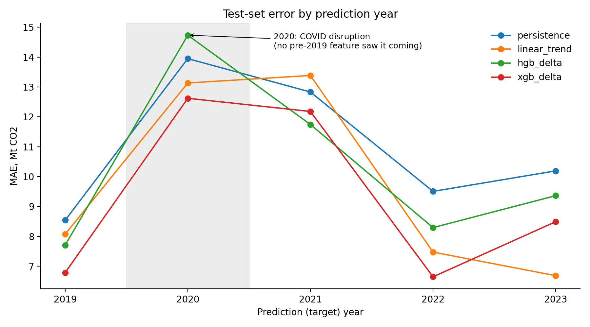

Persistence forecast
ŷt+1 = yt
Next year’s forecast is simply this year’s observed value.
153 countries · 762 test country-years · 2019-2023
I tested one-year-ahead national CO2 forecasts against persistence, the simple rule that next year will equal this year. XGBoost predicting the annual change produced the lowest overall test error, but that is only the first part of the result.
01 · The opponent
National emissions usually move gradually. Since 2010, the median absolute annual change in this dataset is about 4.4% of the emissions level. That makes yesterday’s level a serious forecast, not a token comparison.
Persistence forecast
ŷt+1 = yt
Next year’s forecast is simply this year’s observed value.
Skill against persistence
Skill = 1 - MAEmodelMAEpersistence
Positive skill means the model improves on persistence. Negative skill means the simple baseline wins.
The project rule
“A model that loses to persistence will be reported as losing.”
Every model uses the same chronological test rows and the same scoring code.
02 · Choose the question
Overall MAE gives every tonne of error the same weight, so the largest emitters dominate. Median error asks what happens for the typical country. Both are valid, but they answer different questions.
Overall MAE, lower is better
Its advantage is driven by large, volatile country-year rows. The uncertainty interval still includes zero.
Interpretation: XGBoost delta is the overall point winner, but the evidence does not establish a uniform or statistically settled advantage.
| Model | MAE | RMSE | MedianAE | Skill |
|---|---|---|---|---|
| XGBoost delta | 9.345 | 33.009 | 1.486 | +0.151 |
| Linear trend | 9.751 | 35.064 | 1.450 | +0.114 |
| HGB delta | 10.369 | 39.921 | 1.419 | +0.058 |
| Ridge level | 10.578 | 34.484 | 2.194 | +0.039 |
| Ridge delta | 10.603 | 34.598 | 2.219 | +0.036 |
| Persistence | 11.004 | 43.971 | 1.367 | 0.000 |
| HGB level | 22.479 | 160.414 | 1.491 | -1.043 |
| XGBoost level | 31.181 | 272.674 | 1.616 | -1.834 |
03 · Where the skill lives
XGBoost delta improves sharply on persistence for country-years above 1,000 MtCO2. For small emitters, every learned model loses. The correct claim is tier-specific.

04 · The denominator story
China has the largest absolute persistence miss in this test, 365 MtCO2, but the mean percentage error is 3.2%. Vietnam’s smaller absolute miss corresponds to 11.3%. Rankings reverse when the denominator changes.

05 · Time and disruption
Persistence, HGB delta, and XGBoost delta record their worst test-year MAE in 2020. Linear trend peaks in 2021, after the collapse enters its five-year slope window. XGBoost delta maintains positive point skill in all five years, but its largest gains occur in calmer years.

06 · Evaluation design
The main product is not one algorithm. It is an evaluation that makes weak performance visible and keeps the final test from becoming another tuning set.
Training ends in 2014, validation covers 2015-2018, and the held-out test covers 2019-2023.
Every model is compared with persistence, not only with another learned model.
All test metrics use the same 762 country-year observations.
Expectations and configurations were frozen before the test was opened.
Countries, rather than individual rows, are resampled to respect within-country dependence.
Level prediction
Forecast ŷt+1 directly
The model must recover the large existing emissions level and then estimate the small movement around it.
Delta prediction
Forecast Δŷt+1, then add yt
The model learns the change from a persistence anchor. This reduced the burden on Ridge, HGB, and XGBoost.
Boosted correction
Forecast = base + small trees
XGBoost adds regularized correction trees sequentially. Direct level trees failed badly for the largest emitters because trees do not extrapolate beyond learned terminal values.
07 · Inspect and reproduce
A fresh clone, the documented OWID download, and the frozen training script reproduce the committed comparison table. The repository also contains the executed notebooks, check questions, mathematical foundations, and failure analysis.